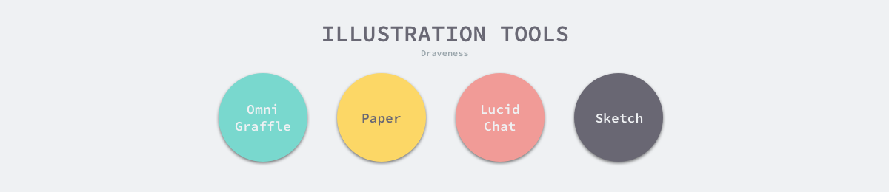
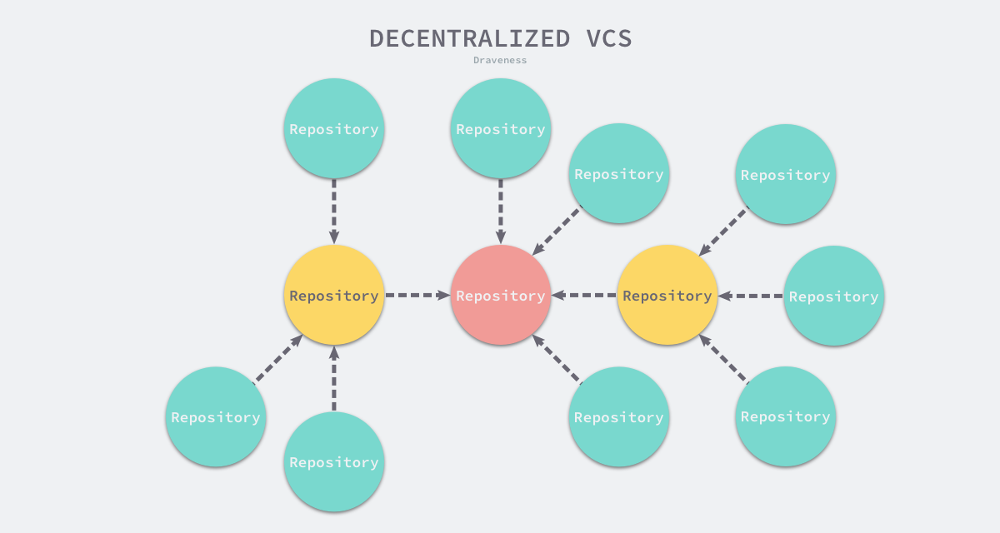
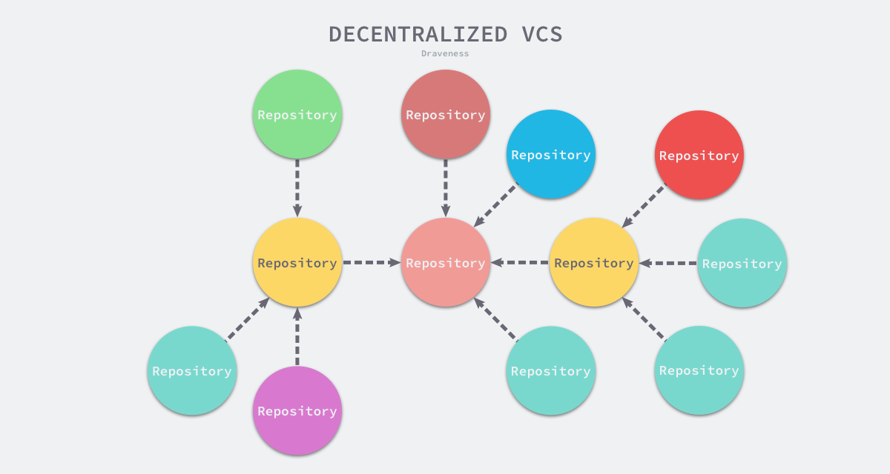
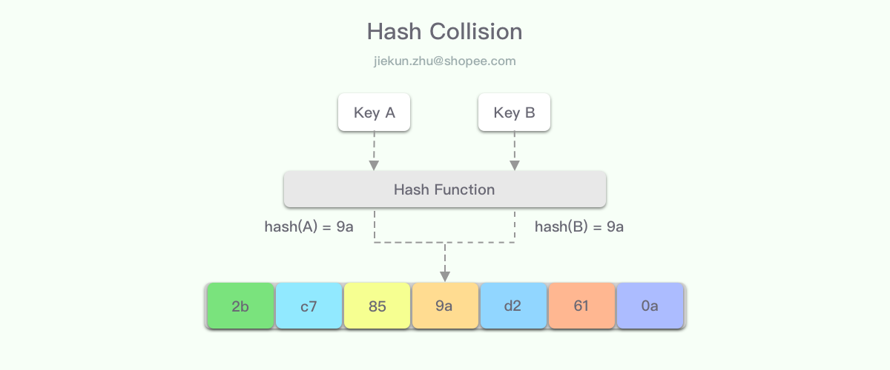
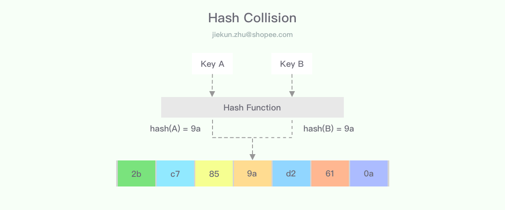
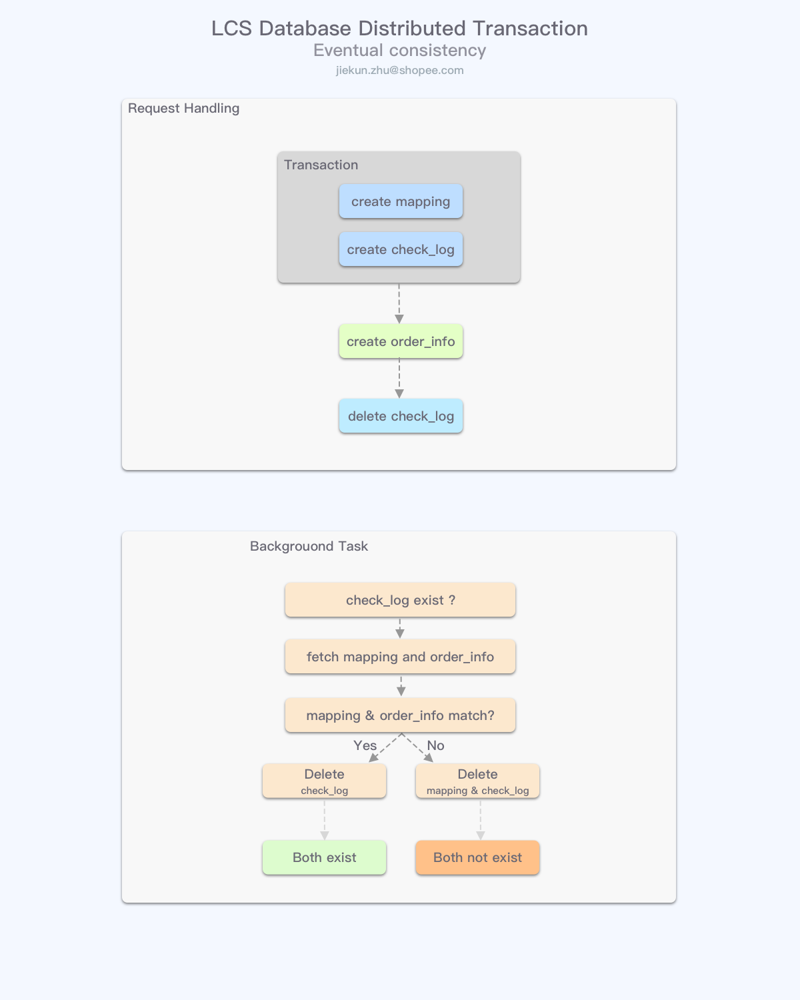

技术博客写作指北——素材、排版和配图
简介
技术博客是分享和总结的平台，也记录了毕业三年内作者一点一滴成长的过程。在写作过程中不难发现，除了选材以外，还存在一些简单的套路，能够快速改善读者的阅读体验。本文通过正反举例的方式为各位作者介绍在博客排版和配图上的技巧，希望通过这些套路能帮助大家更容易下笔写作和贡献更精彩的分享。
内容和编排
博客的选题和材料收集都是特别耗费时间的，最常见的困境就是觉得手上没有能达到对外分享的技术干货。但首先应该认识到的是，写作不是为了记录知识，而是一种将系统知识分享给更多的人的方式，因此如果你打算现学点什么内容，并在短时间内以博客的形式分享出去——请务必打消这个念头，重新开始长线规划这次写作任务。
知识储备
通常技术博客更适合分享这样的内容：
- 用于解决特定问题的系统设计、大型功能或改动的落地实践
- 前沿知识，新概念与新设计
很容易看出两类知识前者更偏向结合业务，而后者更多能在外部的项目源码、论文、博客中检索到。
对于设计和实践类的写作任务，通常整个知识储备周期会比较长，从撰写设计文档开始至落地上线，在整个过程中需要记录关键节点信息，例如遇到问题则记录背景，设计中记录设计难点、实现过程中记录落地阻力，投入使用后记录新问题。尽管这类写作可能需要长达几周或数月的时间，但是分享者能把控的内容细节会相对较多。
而对于前沿知识，准备材料实际上就是阅读的过程，无论是针对代码或是论文。在这种场景下，分享者的任务应是降低门槛、传播知识，因此铺垫、抽象、总结是必须体现的。以论文分享写作为例，为了铺垫，分享者不能局限于论文内，而要对同一方向的知识有更多的了解，例如同类方案及其缺点；而在抽象和总结上，配合自己的理解、绕过复杂的公式和代码，以更简洁的方式让读者明白思路和优势。
编排
每个作者都应该形成自己的写作风格，但是如果你还没有思路，也可以从参照基础套路开始，再逐渐调整出自己的方式。
从问题出发，让读者感兴趣的简单方法就是先让他们看到问题所在。在这个过程中描述问题背景，配合已有的方案、同类项目进行对比，说明存在什么缺陷，以及为何需要一套新的方案。
从整体到细节，先描绘大体的方案轮廓，再分小节丰富完善。在这部分可以配合前面描述的问题，讲解解决问题的核心细节，而无需将所有设计和功能都摊开来分析。在这个过程中要换位思考，如果读者是自己，会不会对这个内容的实现细节感兴趣，再决定要花多少篇幅介绍。
末尾总结，分享者在这部分应该达成的目标是：让只读总结的读者也能了解到大体的思路。
因此，对大多数的分享内容，我们都可以拟定如下的章节和标签：
1 简介
1.1 问题背景
1.2 现有方案
2 方案设计 / 新技术简介
3 细节实现分析
3.1 重难点1实现原理
3.2 重难点2实现原理
4 总结
优雅的排版
在文章排版上，风格统一是最重要的。本节中介绍一些常见的写作、排版错误示范，作者们应该尽可能总结避免这些容易引起读者不适的设计。
代码块
技术博文中出现代码块的概率是比较高的，为了能让更多读者受益，在使用代码块时，应该考虑读者是否有相关基础，是否容易读懂。
func (svc *Service) ReplayTraffic(param *ReplayTrafficRequest) error {
// Get origin traffic
rConfig, err := svc.dao.GetReplayConfig(param.ReplayID)
...
// Replay each traffic with goroutine
for _, traffic := range originTraffics {
wg.Add(1)
go func(traffic *model.OriginTrafficTab) {
...
return
}(traffic)
wg.Wait()
}
// Return
return nil
}
上文示例的代码块省略了很多内容，做到让读者能在半屏内看完全文，并且正确地使用了代码高亮的功能。最糟糕的编排是粘贴大段代码嵌入文中，很多时候读者翻到代码就容易关掉页面，或者直接拉至代码结束的位置继续阅读，这样代码块就没有存在的意义了。
因此在如果有使用的必要，可以尝试对大段代码作如下调整：
- 抽象：使用伪代码代替特定语言代码，使用配图来讲解
- 精简：只保留核心逻辑展示进行解释，删减其余代码、替换成简练的功能描述
- 拆分：分开多段代码块分别讲解
风格统一
组合使用不同的段落、标题风格以及使用特殊符号不是一个良好的实践。例如：
- Objective 1：提高技术影响力
- KR1：完成 Go 语言设计与实现全书
- KR2：社区做三次任意主题的技术分享
- Objective 2：提高工程能力
- KR1：将 Kubernetes 作为主要的工作重点
- KR2：成为 Kubernetes 前 50 的提交者
本文中的段落列表（除错误示例外）均为 Unordered Lists ，大家也可以使用 Ordered Lists ，只要保持统一即可。
段落长度
尽可能让段落长度不要太短也不要太长，过长的段落会给读者带来很大的阅读负担，通常读者需要在一个合适的地方休整，将读到的内容进行分析和理解；完全不为消化内容留空间的超长句、长段落会让阅读效率大打折扣。而简短的句子则应想办法合并至其他段落。
Typo
最后一个让阅读更加舒适的要点是避免 Typo。在技术文章中通常会有大量的专业名词，例如 Mysql、redis、ElasticSearch、shopee、java、python 等，不要让读者看到不正确的拼写。
同样重要的还有避免错误的标点用法，不要混用全角半角符号，并且区分开、和，等。
其他
通过查阅《中文文案排版指北》可以了解更多的中文排版小技巧。在使用 Markdown 进行写作时，可以多参考语法说明，熟悉各种语法技巧，并且抛弃在Office上才适用的习惯，例如段落开头添加空格。另外上一小节中长串名词应注意大小写，正确的写法为 MySQL、Redis、Elasticsearch、Shopee、Java、Python。
作图思路
通常来说，通过改善作图来吸引更多的读者，成本比选材要低得多。许多作图工具都能产出相同的图案，因此工具在这里扮演的角色未必是最重要的。笔者归纳了一些作图的小技巧以及踩过的坑，遵循这些规律一般都可以得到简洁、工整的博客配图。和之前一样，每个小节尽量配合一些反例来讲解。
主题和风格
博客配图需要统一的风格，最简单的风格特征构建可以通过以下两点完成：
- 背景色
- 元素配色
在同一篇博文中，保持配图背景色一致是最基本的要求。为了让配图更有辨识度，通常：
- 背景色不使用纯白色
- 背景不带有网格、花纹图案
- 不使用 PNG 格式搭配透明背景色
当博客被转发或者博客站点主题发生变更时，柔和的背景色不容易显得格格不入。
对于元素，尽可能博文内的元素配色都进行统一，一般而言选择4-6种配色可以应对大部分的情况。作图不应该五彩斑斓，而是带有一定的辨识度和风格，让读者看了配图的结构和配色后能够想起类似的配图和作者。
下面这幅配图中使用了4中颜色来填充元素： 
因此在后续的作图中应该尽量保持用相同的配色方案，并且同类元素使用同种颜色： 
使用多种颜色去填充相对而言会是更糟的选择： 
圆角和阴影
第二个小技巧是在元素上使用圆角和阴影，这个改动非常简单，可以让元素看起来：
- 更加柔和、不突兀
- 具有立体感
请忽略示例图中的错误配色组合，如前一节所述，五彩斑斓的配色通常不如简洁、固定的配色适合放在博客配图中。 
通过去除所有的圆角、移除阴影后，配图变成如下样式，整体的观感也有所下降： 
构图和比例
我们经常会见到在创作时使用相同大小的元素，嵌入到博文后缺变得忽大忽小，通过在最开始便固定好画布的宽度可以轻松解决这个问题。通常使用宽度 1200px 的画布可以兼容大部分博客系统的版面变化，并且和以前一样，请保持相同元素在不同配图中形状、大小、配色要尽可能一致。
另一个要注意的问题是，请尽量保持配图的宽度大于高度，例如使用 1200 * 500、1200 * 700，而不要使用 1200 * 3000 的画布。
下图作为错误示范，长图在不同的浏览器/客户端下显示效果欠佳。这种情况在绘制系统架构图、复杂的流程图、时序图等时会经常遇见。实际上只有少数情况下是需要展示出全局的流程、架构，而其他时候则可以将其进行拆分，通过多个章节和配图来慢慢讲解。

总结
尽量避免一些临时起意的写作，因为好的内容都需要有素材和知识储备来支撑，所以写作前可以尝试：
- 分享业务系统设计要尽早计划以及记录关键节点
- 分享前沿知识应该了解相同专业方向和为读者铺垫、抽象、总结
在文章结构的安排上有很多固定模板，大部分写作遵循以下套路都足以将事情讲解清晰：
- 先抛问题
- 从整体到细节
- 概括总结
在写作完成后可以按照以下 Checklist 来对全文进行对齐和润色，对文字亦或是图片都要做到统一：
- 排版问题：代码块抽象、精简、拆分；段落格式统一、长度易读；避免 Typo
- 作图问题：元素尽可能少并简洁，拆分多图表达；统一背景、复用配色方案；尝试圆角和阴影；固定宽度横向构图
参考资料
附录：写作工具箱
| 分类 | 名称 | 链接 | 备注 |
|---|---|---|---|
| 配色 | Coolors | https://coolors.co/ | |
| 配色 | Colormind | http://colormind.io/ | |
| 配色 | ColorSpace | https://mycolor.space/ | |
| 作图 | Sketch | https://www.sketch.com/ | |
| 作图 | Paper | https://paper.bywetransfer.com/ | 需要Apple Pen |
| 作图 | LucidChart | https://www.lucidchart.com/pages/ | |
| 素材 | IconPark | https://iconpark.bytedance.com/ | |
| 素材 | iconfont+ | https://www.iconfont.cn/ | |
| 博客 | PingCAP | https://pingcap.com/blog-cn/ | |
| 博客 | Meituan | https://tech.meituan.com/ | |
| 博客 | Netflix | https://netflixtechblog.com/ | |
| 论文 | NSDI | https://www.usenix.org/ | 网络/分布式 |
| 论文 | SOSP | https://dl.acm.org/ | 操作系统 |
| 论文 | OSDI | https://www.usenix.org/ | 操作系统 |
| 论文 | VLDB | https://vldb.org/ | 数据库 |
| 论文 | SIGMOD | https://sigmod2020.org/ | 数据库 |
| 论文 | FAST | https://www.usenix.org/ | 存储 |